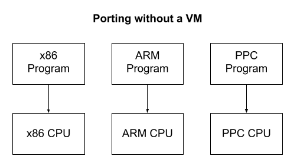
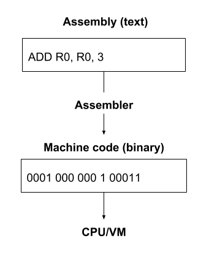

By: Justin Meiners and Ryan Pendleton
View the final code and other resources in the GitHub repo.
In this tutorial, I will teach you how to write your own virtual machine (VM) that can run assembly language programs, such as my friend’s 2048 or my Roguelike. If you know how to program, but would like to gain a deeper understanding of what is going on inside a computer and better understand how programming languages work, then this project is for you. Writing your own VM may sound a little scary, but I promise that you will find it to be surprisingly simple and enlightening.
The final code is about 250 lines of C (unix, windows). All you need to know is how to read basic C or C++ and how to do binary arithmetic.
Note: This tutorial is a literate program. This means you are reading the source code right now! Each piece of code from the VM project will be shown and explained thoroughly, so you can be sure nothing is left out. The final code was created by “tangling” the blocks of code together.
A VM is a program that acts like a computer. It simulates a CPU along with a few other hardware components, allowing it to perform arithmetic, read and write to memory, and interact with I/O devices, just like a physical computer. Most importantly, it can understand a machine language which you can use to program it.
The amount of computer hardware the VM attempts to simulate depends on its purpose. Some VMs are designed to reproduce the behavior of some particular computer, such as video game emulators. Most people don’t have an NES lying around anymore, but we can still play NES games by simulating the NES hardware in a program. These emulators must faithfully recreate every detail and major hardware component of the original device.
Other VMs don’t act like any real computer and are entirely made up! This is primarily done to make software development easier. Imagine you wanted to create a program that ran on multiple computer architectures. A VM could offer a standard platform which provided portability for all of them. Instead of rewriting a program in different dialects of assembly for each CPU architecture, you would only need to write the small VM program in each assembly language. Each program would then be written only once in the VM’s assembly language.

Note: A compiler solves a similar problem by compiling a standard high-level language to several CPU architectures. A VM creates one standard CPU architecture which is simulated on various hardware devices. One advantage of a compiler is that it has no runtime overhead while a VM does. Even though compilers do a pretty good job, writing a new one that targets multiple platforms is very difficult, so VMs are still helpful here. In practice, VMs and compilers are mixed at various levels.
The Java Virtual Machine (JVM) is a very successful example. The JVM itself is a moderately sized program that is small enough for one programmer to understand. This has made it possible to be written for thousands of devices including phones. Once the JVM is implemented on a new device, any Java, Kotlin, or Clojure program ever written can run on it without modification. The only cost is the overhead of the VM itself and the further abstraction from the machine. Most of the time, this is a pretty good tradeoff.
A VM doesn’t have to be large or pervasive to provide a similar benefit. Old video games often used small VMs to provide simple scripting systems.
VMs are also useful for executing code in a secure or isolated way. One application of this is garbage collection. There is no trivial way to implement automatic garbage collection on top of C or C++ since a program cannot see its own stack or variables. However, a VM is “outside” the program it is running and can observe all of the memory references on the stack.
Another example of this behavior is demonstrated by Ethereum smart contracts. Smart contracts are small programs which are executed by each validating node in the blockchain network. This requires the node operators to run programs on their machines that have been written by complete strangers, without any opportunity to scrutinize them beforehand. To prevent a contract from doing malicious things, they are run inside a VM that has no access to the file system, network, disc, etc. Ethereum is also a good application of the portability features that result when using a VM. Since Ethereum nodes can be run on many kinds of computers and operating systems, the use of a VM allows smart contracts to be written without any consideration of the many platforms they run on.
Our VM will simulate the LC-3, an educational computer architecture commonly used to teach university students computer architecture and assembly. It has a simplified instruction set compared to x86, but demonstrates the main ideas used by modern CPUs.
Note: The LC-3 is defined in “Introduction to Computing Systems: From Bits & Gates to C/C++ & Beyond” by Yale N. Patt and Sanjay J. Patel. This tutorial is based on the second edition.
To start, we need to simulate the essential hardware components of the machine. Try to understand what each component is, but don’t worry right now if you are unsure of how it fits into the larger picture. Start by creating a C file. Each of the code snippets in this section should be placed in the global scope of this file.
The LC-3 has 65,536 memory locations (the maximum that is addressable by a 16-bit unsigned integer 2^16), each of which stores a 16-bit value. This means it can store a total of only 128KB, which is a lot smaller than you may be used to! In our program, this memory will be stored in a simple array:
#define MEMORY_MAX (1 << 16)
uint16_t memory[MEMORY_MAX]; /* 65536 locations */
Used by 1 2 3 4
A register is a slot for storing a single value on the CPU. Registers are like the “workbench” of the CPU. For the CPU to work with a piece of data, it has to be in one of the registers. However, since there are just a few registers, only a minimal amount of data can be loaded at any given time. Programs work around this by loading values from memory into registers, calculating values into other registers, and then storing the final results back in memory.
The LC-3 has 10 total registers, each of which is 16 bits. Most of them are general purpose, but a few have designated roles.
- 8 general purpose registers (R0-R7)
- 1 program counter (PC) register
- 1 condition flags (COND) register
The general purpose registers can be used to perform any program calculations. The program counter is an unsigned integer which is the address of the next instruction in memory to execute. The condition flags tell us information about the previous calculation.
enum
{
R_R0 = 0,
R_R1,
R_R2,
R_R3,
R_R4,
R_R5,
R_R6,
R_R7,
R_PC, /* program counter */
R_COND,
R_COUNT
};
Used by 1 2 3 4
Just like the memory, we will store the registers in an array:
An instruction is a command which tells the CPU to do some fundamental task, such as add two numbers. Instructions have both an opcode which indicates the kind of task to perform and a set of parameters which provide inputs to the task being performed.
Each opcode represents one task that the CPU “knows” how to do. There are just 16 opcodes in LC-3. Everything the computer can calculate is some sequence of these simple instructions. Each instruction is 16 bits long, with the left 4 bits storing the opcode. The rest of the bits are used to store the parameters.
We will discuss, in detail, what each instruction does later. For now, define the following opcodes. Make sure they stay in this order so that they are assigned the proper enum value:
enum
{
OP_BR = 0, /* branch */
OP_ADD, /* add */
OP_LD, /* load */
OP_ST, /* store */
OP_JSR, /* jump register */
OP_AND, /* bitwise and */
OP_LDR, /* load register */
OP_STR, /* store register */
OP_RTI, /* unused */
OP_NOT, /* bitwise not */
OP_LDI, /* load indirect */
OP_STI, /* store indirect */
OP_JMP, /* jump */
OP_RES, /* reserved (unused) */
OP_LEA, /* load effective address */
OP_TRAP /* execute trap */
};
Used by 1 2 3 4
Note: The Intel x86 architecture has hundreds of instructions, while others such as ARM and LC-3 have very few. Small instruction sets are referred to as RISCs while larger ones are called CISCs. Larger instruction sets typically do not provide any fundamentally new possibilities, but they often make it more convenient to write assembly for. A single instruction in CISC might take the place of several in RISC. However, they tend to be more complex and expensive for engineers to design and manufacture. This and other tradeoffs cause the designs to come in and out of style.
The R_COND register stores condition flags which provide information about the most recently executed calculation. This allows programs to check logical conditions such as if (x > 0) { ... }.
Each CPU has a variety of condition flags to signal various situations. The LC-3 uses only 3 condition flags which indicate the sign of the previous calculation.
enum
{
FL_POS = 1 << 0, /* P */
FL_ZRO = 1 << 1, /* Z */
FL_NEG = 1 << 2, /* N */
};
Used by 1 2 3 4
Note: (The
<<symbol is called the left bitshift operator.(n << k)shifts the bits ofnto the leftkplaces. Thus1 << 2will equal4. Read that link if you are not familiar. It will be important.)
We are finished setting up the hardware components of our VM! After adding standard includes (see reference), your file should look something like this:
Now let’s look at an LC-3 assembly program to get an idea of what the VM actually runs. You don’t need to know how to program assembly or understand everything that is going on. Just try to get a general idea of what is going on. Here is a simple “Hello World”:
.ORIG x3000 ; this is the address in memory where the program will be loaded
LEA R0, HELLO_STR ; load the address of the HELLO_STR string into R0
PUTs ; output the string pointed to by R0 to the console
HALT ; halt the program
HELLO_STR .STRINGZ "Hello World!" ; store this string here in the program
.END ; mark the end of the file
Just like in C, the program starts at the top and executes one statement at a time. However, unlike C, there are no nested scopes {} or control structures such as if or while; just a flat list of statements. This makes it much easier to execute.
Notice that some of the statements have names which match the opcodes we defined earlier. Previously, we learned that every instruction was 16 bits, but each line looks like it is a different number of characters. How is this inconsistency possible?
This is because the code we are reading is written in assembly which is a human-readable and writable form, encoded in plain text. A tool called an assembler is used to transform each line of text into a 16-bit binary instruction the VM can understand. This binary form, which is essentially an array of 16-bit instructions, is called machine code and is what the VM actually runs.

Note: Although a compiler and an assembler play a similar role in development, they are not the same. An assembler simply encodes what the programmer has written in text into binary, replacing symbols with their binary representation and packing them into instructions.
The commands .ORIG and .STRINGZ look like instructions but they aren’t. They are assembler directives which generate a piece of code or data (like macros). For example, the .STRINGZ inserts a string of characters into the program binary at the location it is written.
Loops and conditions are done with a goto-like instruction. Here is another example which counts to 10.
AND R0, R0, 0 ; clear R0
LOOP ; label at the top of our loop
ADD R0, R0, 1 ; add 1 to R0 and store back in R0
ADD R1, R0, -10 ; subtract 10 from R0 and store back in R1
BRn LOOP ; go back to LOOP if the result was negative
... ; R0 is now 10!
Note: Learning to write assembly is not necessary for this tutorial. However, if you are interested, you can write and assemble your own LC-3 programs using the LC-3 Tools.
Once again, the previous examples are just to give you an idea of what the VM does. To write a VM, you don’t need to be fluent in assembly. As long as you follow the proper procedure for reading and executing instructions, any LC-3 program will run correctly, no matter how complicated it is. In theory, it could even run a web browser or an operating system like Linux!
If you think about this property deeply, it is a philosophically remarkable idea. The programs themselves can do all kinds of intelligent things that we never anticipated and may not be able to understand, but at the same time, everything they can do is limited to the simple code we will write! We simultaneously know everything and nothing about how each program works. Turing observed this marvelous idea:
“The view that machines cannot give rise to surprises is due, I believe, to a fallacy to which philosophers and mathematicians are particularly subject. This is the assumption that as soon as a fact is presented to a mind all consequences of that fact spring into the mind simultaneously with it. It is a very useful assumption under many circumstances, but one too easily forgets that it is false.” — Alan M. Turing
Here is the procedure we need to write:
PC register.PC register.You may be wondering, “if the loop keeps incrementing the PC, and we don’t have if or while, won’t it quickly run out of instructions?” No. As we mentioned before, some goto-like instructions change the execution flow by jumping the PC around.
Let’s start outlining this process in the main loop:
int main(int argc, const char* argv[])
{
@{Load Arguments}
@{Setup}
/* since exactly one condition flag should be set at any given time, set the Z flag */
reg[R_COND] = FL_ZRO;
/* set the PC to starting position */
/* 0x3000 is the default */
enum { PC_START = 0x3000 };
reg[R_PC] = PC_START;
int running = 1;
while (running)
{
/* FETCH */
uint16_t instr = mem_read(reg[R_PC]++);
uint16_t op = instr >> 12;
switch (op)
{
case OP_ADD:
@{ADD}
break;
case OP_AND:
@{AND}
break;
case OP_NOT:
@{NOT}
break;
case OP_BR:
@{BR}
break;
case OP_JMP:
@{JMP}
break;
case OP_JSR:
@{JSR}
break;
case OP_LD:
@{LD}
break;
case OP_LDI:
@{LDI}
break;
case OP_LDR:
@{LDR}
break;
case OP_LEA:
@{LEA}
break;
case OP_ST:
@{ST}
break;
case OP_STI:
@{STI}
break;
case OP_STR:
@{STR}
break;
case OP_TRAP:
@{TRAP}
break;
case OP_RES:
case OP_RTI:
default:
@{BAD OPCODE}
break;
}
}
@{Shutdown}
}
Used by 1 2
While we are at the main loop let’s handle command line input to make our program usable. We expect one or more paths to VM images and present a usage string if none are given.
if (argc < 2)
{
/* show usage string */
printf("lc3 [image-file1] ...\n");
exit(2);
}
for (int j = 1; j < argc; ++j)
{
if (!read_image(argv[j]))
{
printf("failed to load image: %s\n", argv[j]);
exit(1);
}
}
Used by 1 2 3
Your task now is to fill in each opcode case with a correct implementation. This is easier than it sounds. A detailed specification for each instruction is included in the project documents. The specificiation for each translates pretty easily to several lines of codes. I will demonstrate how to implement two of them here. The code for the rest can be found in the next section.
The ADD instruction takes two numbers, adds them together, and stores the result in a register. Its specification is found on page 526. Each ADD instruction looks like the following:

The encoding shows two rows because there are two different “modes” for this instruction. Before I explain modes, let’s try to find the similarities between them. In both rows, we can see that we start with 4 bits, 0001. This is the opcode value for OP_ADD. The next 3 bits are marked DR. This stands for destination register. The destination register is where the added sum will be stored. The next 3 bits are SR1. This is the register containing the first number to add.
So we know where we want to store the result and we know the first number to add. The last bit of information we need is the second number to add. At this point, the two rows start to look different. Notice that on the top row the 5th bit is a 0 and in the second row it is 1. This bit indicates whether it is immediate mode or register mode. In register mode, the second number is stored in a register just like the first. This is marked SR2 and is contained in bits 2-0. Bits 3 and 4 are unused. In assembly this would be written as:
ADD R2 R0 R1 ; add the contents of R0 to R1 and store in R2.
Immediate mode is a convenience which reduces the length of a typical program.
Instead of adding two values stored in separate registers, the second value is embedded in the instruction itself, marked
imm5 in the diagram.
This removes the need to write instructions to load the value from memory.
The tradeoff is that the instruction only has room for a small number, up to 2^5=32 (unsigned) to be exact,
making immediate mode primarily useful for incrementing and decrementing. In assembly, it could be written as:
ADD R0 R0 1 ; add 1 to R0 and store back in R0
Here is a summary from the specification:
If bit [5] is 0, the second source operand is obtained from SR2. If bit [5] is 1, the second source operand is obtained by sign-extending the imm5 field to 16 bits. In both cases, the second source operand is added to the contents of SR1 and the result stored in DR. (Pg. 526)
That sounds just like the behaviour we discussed, but what is “sign-extending”? The immediate mode value has only 5 bits, but it needs to be added to a 16-bit number. To do the addition, those 5 bits need to be extended to 16 to match the other number. For positive numbers, we can simply fill in 0’s for the additional bits. For negative numbers, this causes a problem. For example, -1 in 5 bits is 1 1111. If we just extended it with 0’s, this is 0000 0000 0001 1111 which is equal to 31. Sign extension corrects this problem by filling in 0’s for positive numbers and 1’s for negative numbers, so that original values are preserved.
uint16_t sign_extend(uint16_t x, int bit_count)
{
if ((x >> (bit_count - 1)) & 1) {
x |= (0xFFFF << bit_count);
}
return x;
}
Used by 1 2 3 4
Note: If you are interested in exactly how negative numbers can be represented in binary, you can read about Two’s Complement. However, this is not essential. You can just copy the code above and use it whenever the specification says to sign extend numbers.
There is one last sentence in the specification:
The condition codes are set, based on whether the result is negative, zero, or positive. (Pg. 526)
Earlier we defined a condition flags enum, and now it’s time to use them. Any time a value is written to a register, we need to update the flags to indicate its sign. We will write a function so that this can be reused:
void update_flags(uint16_t r)
{
if (reg[r] == 0)
{
reg[R_COND] = FL_ZRO;
}
else if (reg[r] >> 15) /* a 1 in the left-most bit indicates negative */
{
reg[R_COND] = FL_NEG;
}
else
{
reg[R_COND] = FL_POS;
}
}
Used by 1 2 3 4
Now we are ready to write the code for the ADD case:
{
/* destination register (DR) */
uint16_t r0 = (instr >> 9) & 0x7;
/* first operand (SR1) */
uint16_t r1 = (instr >> 6) & 0x7;
/* whether we are in immediate mode */
uint16_t imm_flag = (instr >> 5) & 0x1;
if (imm_flag)
{
uint16_t imm5 = sign_extend(instr & 0x1F, 5);
reg[r0] = reg[r1] + imm5;
}
else
{
uint16_t r2 = instr & 0x7;
reg[r0] = reg[r1] + reg[r2];
}
update_flags(r0);
}
Used by 1
This section contained a lot of information, so let’s summarize.
- ADD takes two values and stores them in a register.
- In register mode, the second value to add is found in a register.
- In immediate mode, the second value is embedded in the right-most 5 bits of the instruction.
- Values which are shorter than 16 bits need to be sign extended.
- Any time an instruction modifies a register, the condition flags need to be updated.
You may be feeling overwhelmed about writing 15 more instructions. However, all of what you learned here will be reused. Most of the instructions use some combination of sign extension, different modes, and updating flags.
LDI stands for “load indirect.” This instruction is used to load a value from a location in memory into a register. The specification is found on page 532.
Here is what the binary layout looks like:

In contrast to ADD, there are no modes and fewer parameters. This time, the opcode is 1010 which corresponds with the OP_LDI enum value. Just like ADD, it contains a 3-bit DR (the destination register) for storing the loaded value. The remaining bits are labeled PCoffset9. This is an immediate value embedded in the instruction (similar to imm5). Since this instruction loads from memory, we can guess that this number is some kind of address which tells us where to load from. The specification provides more detail:
An address is computed by sign-extending bits
[8:0]to 16 bits and adding this value to the incrementedPC. What is stored in memory at this address is the address of the data to be loaded intoDR. (Pg. 532)
Just like before, we need to sign extend this 9-bit value, but this time add it to the current PC. (If you look back at the execution loop, the PC was incremented right after this instruction was loaded.) The resulting sum is an address to a location in memory, and that address contains, yet another value which is the address of the value to load.
This may seem like a roundabout way to read from memory, but it is indispensable. The LD instruction is limited to address offsets that are 9 bits, whereas the memory requires 16 bits to address. LDI is useful for loading values that are stored in locations far away from the current PC, but to use it, the address of the final location needs to be stored in a neighborhood nearby. You can think of it like having a local variable in C which is a pointer to some data:
// the value of far_data is an address
// of course far_data itself (the location in memory containing the address) has an address
char* far_data = "apple";
// In memory it may be layed out like this:
// Address Label Value
// 0x123: far_data = 0x456
// ...
// 0x456: string = 'a'
// if PC was at 0x100
// LDI R0 0x023
// would load 'a' into R0
Same as before, the flags need to be updated after putting the value into DR:
The condition codes are set based on whether the value loaded is negative, zero, or positive. (Pg. 532)
Here is the code for this case: (mem_read will be discussed in a later section.)
{
/* destination register (DR) */
uint16_t r0 = (instr >> 9) & 0x7;
/* PCoffset 9*/
uint16_t pc_offset = sign_extend(instr & 0x1FF, 9);
/* add pc_offset to the current PC, look at that memory location to get the final address */
reg[r0] = mem_read(mem_read(reg[R_PC] + pc_offset));
update_flags(r0);
}
Used by 1
As I said, this instruction shared a lot of the code and knowledge learned from ADD. You will find this is the case with the remaining instructions.
You now need to go back and implement the rest of the switch cases for the instructions. Follow the specification and use the code listed here to complete the others. The code for all instructions is listed at the end of the tutorial. Two of the opcodes specified before will not be used, they are OP_RTI and OP_RES. You can ignore these cases or throw an error if they are executed. After you are done, the bulk of your VM will be completed!
This section contains the full implementations of the remaining instructions if you get stuck.
(these are unused)
{
uint16_t r0 = (instr >> 9) & 0x7;
uint16_t r1 = (instr >> 6) & 0x7;
uint16_t imm_flag = (instr >> 5) & 0x1;
if (imm_flag)
{
uint16_t imm5 = sign_extend(instr & 0x1F, 5);
reg[r0] = reg[r1] & imm5;
}
else
{
uint16_t r2 = instr & 0x7;
reg[r0] = reg[r1] & reg[r2];
}
update_flags(r0);
}
Used by 1
{
uint16_t r0 = (instr >> 9) & 0x7;
uint16_t r1 = (instr >> 6) & 0x7;
reg[r0] = ~reg[r1];
update_flags(r0);
}
Used by 1
{
uint16_t pc_offset = sign_extend(instr & 0x1FF, 9);
uint16_t cond_flag = (instr >> 9) & 0x7;
if (cond_flag & reg[R_COND])
{
reg[R_PC] += pc_offset;
}
}
Used by 1
RET is listed as a separate instruction in the specification, since it is a different keyword in assembly. However, it is actually a special case of JMP. RET happens whenever R1 is 7.
{
uint16_t long_flag = (instr >> 11) & 1;
reg[R_R7] = reg[R_PC];
if (long_flag)
{
uint16_t long_pc_offset = sign_extend(instr & 0x7FF, 11);
reg[R_PC] += long_pc_offset; /* JSR */
}
else
{
uint16_t r1 = (instr >> 6) & 0x7;
reg[R_PC] = reg[r1]; /* JSRR */
}
}
Used by 1
{
uint16_t r0 = (instr >> 9) & 0x7;
uint16_t pc_offset = sign_extend(instr & 0x1FF, 9);
reg[r0] = mem_read(reg[R_PC] + pc_offset);
update_flags(r0);
}
Used by 1
{
uint16_t r0 = (instr >> 9) & 0x7;
uint16_t r1 = (instr >> 6) & 0x7;
uint16_t offset = sign_extend(instr & 0x3F, 6);
reg[r0] = mem_read(reg[r1] + offset);
update_flags(r0);
}
Used by 1
{
uint16_t r0 = (instr >> 9) & 0x7;
uint16_t pc_offset = sign_extend(instr & 0x1FF, 9);
reg[r0] = reg[R_PC] + pc_offset;
update_flags(r0);
}
Used by 1
{
uint16_t r0 = (instr >> 9) & 0x7;
uint16_t pc_offset = sign_extend(instr & 0x1FF, 9);
mem_write(reg[R_PC] + pc_offset, reg[r0]);
}
Used by 1
{
uint16_t r0 = (instr >> 9) & 0x7;
uint16_t pc_offset = sign_extend(instr & 0x1FF, 9);
mem_write(mem_read(reg[R_PC] + pc_offset), reg[r0]);
}
Used by 1
{
uint16_t r0 = (instr >> 9) & 0x7;
uint16_t r1 = (instr >> 6) & 0x7;
uint16_t offset = sign_extend(instr & 0x3F, 6);
mem_write(reg[r1] + offset, reg[r0]);
}
Used by 1
The LC-3 provides a few predefined routines for performing common tasks and interacting with I/O devices. For example, there are routines for getting input from the keyboard and for displaying strings to the console. These are called trap routines which you can think of as the operating system or API for the LC-3. Each trap routine is assigned a trap code which identifies it (similar to an opcode). To execute one, the TRAP instruction is called with the trap code of the desired routine.

Define an enum for each trap code:
enum
{
TRAP_GETC = 0x20, /* get character from keyboard, not echoed onto the terminal */
TRAP_OUT = 0x21, /* output a character */
TRAP_PUTS = 0x22, /* output a word string */
TRAP_IN = 0x23, /* get character from keyboard, echoed onto the terminal */
TRAP_PUTSP = 0x24, /* output a byte string */
TRAP_HALT = 0x25 /* halt the program */
};
Used by 1 2 3 4
You may be wondering why the trap codes are not included in the instructions.
This is because they do not actually introduce any new functionality to the LC-3, they just provide a convenient way to perform a task (similar to OS system calls).
In the official LC-3 simulator, trap routines are written in assembly.
When a trap code is called, the PC is moved to that code’s address.
The CPU executes the procedure’s instructions, and when it is complete, the PC is reset to the location following the initial call.
Note: This is why programs start at address
0x3000instead of0x0. The lower addresses are left empty to leave space for the trap routine code.
There is no specification for how trap routines must be implemented, only what they are supposed to do. In our VM, we are going to do things slightly differently by writing them in C. When a trap code is invoked, a C function will be called. When it is completed, execution will return to the instructions. (If you are curious about trap codes in assembly, see Ryan’s implementation.)
Even though the trap routines can be written in assembly and this is what a physical LC-3 computer would do, it isn’t the best fit for a VM. Instead of writing our own primitive I/O routines, we can take advantage of the ones available on our OS. This will make the VM run better on our computers, simplify the code, and provide a higher level of abstraction for portability.
Note: Getting input from the keyboard is one specific example of this. The assembly version uses a loop to continuously check the keyboard for input. This consumes a lot of CPU time for nothing! Using a proper OS input function allows the program to sleep until input is received.
In the switch case for the TRAP opcode, add another switch:
reg[R_R7] = reg[R_PC];
switch (instr & 0xFF)
{
case TRAP_GETC:
@{TRAP GETC}
break;
case TRAP_OUT:
@{TRAP OUT}
break;
case TRAP_PUTS:
@{TRAP PUTS}
break;
case TRAP_IN:
@{TRAP IN}
break;
case TRAP_PUTSP:
@{TRAP PUTSP}
break;
case TRAP_HALT:
@{TRAP HALT}
break;
}
As with instructions, I will show you how to implement a single trap routine and leave the rest to you.
The PUTS trap code is used to output a null-terminated string (similar to printf in C). The specification is found on page 543.
To display a string, we must give the trap routine a string to display. This is done by storing the address of the first character in R0 before beginning the trap.
The specification says:
Write a string of ASCII characters to the console display. The characters are contained in consecutive memory locations, one character per memory location, starting with the address specified in
R0. Writing terminates with the occurrence ofx0000in a memory location. (Pg. 543)
Notice that unlike C strings, characters are not stored in a single byte, but in a single memory location. Memory locations in LC-3 are 16 bits, so each character in the string is 16 bits wide. To display this with a C function, we will need to convert each value to a char and output them individually.
{
/* one char per word */
uint16_t* c = memory + reg[R_R0];
while (*c)
{
putc((char)*c, stdout);
++c;
}
fflush(stdout);
}
Used by 1
That’s all for this routine. The trap routines are pretty straightforward if you are familiar with C. Go back to the specification and implement the others now. As with the instructions, the full code can be found at the end of the tutorial.
This section contains the full implementations of the remaining trap routines.
Input Character
/* read a single ASCII char */
reg[R_R0] = (uint16_t)getchar();
update_flags(R_R0);
Used by 1
Output Character
Prompt for Input Character
{
printf("Enter a character: ");
char c = getchar();
putc(c, stdout);
fflush(stdout);
reg[R_R0] = (uint16_t)c;
update_flags(R_R0);
}
Used by 1
Output String
{
/* one char per byte (two bytes per word)
here we need to swap back to
big endian format */
uint16_t* c = memory + reg[R_R0];
while (*c)
{
char char1 = (*c) & 0xFF;
putc(char1, stdout);
char char2 = (*c) >> 8;
if (char2) putc(char2, stdout);
++c;
}
fflush(stdout);
}
Used by 1
Halt Program
We have mentioned a lot about loading and executing instructions from memory, but how do instructions get into memory in the first place? When an assembly program is converted to machine code, the result is a file containing an array of instructions and data. This can be loaded by just copying the contents right into an address in memory.
The first 16 bits of the program file specify the address in memory where the program should start. This address is called the origin. It must be read first, after which the rest of the data can be read from the file into memory starting at the origin address.
Here is the code for reading an LC-3 program into memory:
void read_image_file(FILE* file)
{
/* the origin tells us where in memory to place the image */
uint16_t origin;
fread(&origin, sizeof(origin), 1, file);
origin = swap16(origin);
/* we know the maximum file size so we only need one fread */
uint16_t max_read = MEMORY_MAX - origin;
uint16_t* p = memory + origin;
size_t read = fread(p, sizeof(uint16_t), max_read, file);
/* swap to little endian */
while (read-- > 0)
{
*p = swap16(*p);
++p;
}
}
Used by 1 2 3 4
Notice that swap16 is called on each loaded value. LC-3 programs are big-endian, but most modern computers are little-endian. So, we need to swap each uint16 that is loaded. (If you happen to be using an obscure computer, like an old PPC Mac, then do not swap.)
Note: Endianness refers to how bytes of an integer are interpreted. In little-endian, the first byte is the least significant digit, and in big-endian, it is reversed. As far as I know, the decision is mostly arbitrary. Different companies made different decisions, so now we are left with varying implementations. You do not need to know anything else about endianness for this project.
Let’s also add a convenience function for read_image_file which takes a path a string;
int read_image(const char* image_path)
{
FILE* file = fopen(image_path, "rb");
if (!file) { return 0; };
read_image_file(file);
fclose(file);
return 1;
}
Used by 1 2 3 4
Some special registers are not accessible from the normal register table. Instead, a special address is reserved for them in memory. To read and write to these registers, you just read and write to their memory location. These are called memory mapped registers. They are commonly used to interact with special hardware devices.
The LC-3 has two memory mapped registers that need to be implemented. They are the keyboard status register (KBSR) and keyboard data register (KBDR). The KBSR indicates whether a key has been pressed, and the KBDR identifies which key was pressed.
Although you can request keyboard input using GETC, this blocks execution until input is received. KBSR and KBDR allows you to poll the state) of the device and continue execution, so the program can stay responsive while waiting for input.
enum
{
MR_KBSR = 0xFE00, /* keyboard status */
MR_KBDR = 0xFE02 /* keyboard data */
};
Used by 1 2 3 4
Memory mapped registers make memory access a bit more complicated. We can’t read and write to the memory array directly, but must instead call setter and getter functions. When memory is read from KBSR, the getter will check the keyboard and update both memory locations.
void mem_write(uint16_t address, uint16_t val)
{
memory[address] = val;
}
uint16_t mem_read(uint16_t address)
{
if (address == MR_KBSR)
{
if (check_key())
{
memory[MR_KBSR] = (1 << 15);
memory[MR_KBDR] = getchar();
}
else
{
memory[MR_KBSR] = 0;
}
}
return memory[address];
}
Used by 1 2 3 4
That completes the last component of the VM! Provided that you implemented the rest of the trap routines and instructions, you are almost ready to try it out!
This section contains some tedious details that are needed to access the keyboard and behave nicely. These are not insightful or relevant to learning about VMs. Feel free to copy paste! These functions should be declared above your main function.
NOTE: Skip to the next section for the Windows versions of these functions.
struct termios original_tio;
void disable_input_buffering()
{
tcgetattr(STDIN_FILENO, &original_tio);
struct termios new_tio = original_tio;
new_tio.c_lflag &= ~ICANON & ~ECHO;
tcsetattr(STDIN_FILENO, TCSANOW, &new_tio);
}
void restore_input_buffering()
{
tcsetattr(STDIN_FILENO, TCSANOW, &original_tio);
}
uint16_t check_key()
{
fd_set readfds;
FD_ZERO(&readfds);
FD_SET(STDIN_FILENO, &readfds);
struct timeval timeout;
timeout.tv_sec = 0;
timeout.tv_usec = 0;
return select(1, &readfds, NULL, NULL, &timeout) != 0;
}
Used by 1 2
#include <stdio.h>
#include <stdint.h>
#include <signal.h>
/* unix only */
#include <stdlib.h>
#include <unistd.h>
#include <fcntl.h>
#include <sys/time.h>
#include <sys/types.h>
#include <sys/termios.h>
#include <sys/mman.h>
Used by 1 2
NOTE: If you already included the Unix versions don’t add these!
HANDLE hStdin = INVALID_HANDLE_VALUE;
DWORD fdwMode, fdwOldMode;
void disable_input_buffering()
{
hStdin = GetStdHandle(STD_INPUT_HANDLE);
GetConsoleMode(hStdin, &fdwOldMode); /* save old mode */
fdwMode = fdwOldMode
^ ENABLE_ECHO_INPUT /* no input echo */
^ ENABLE_LINE_INPUT; /* return when one or
more characters are available */
SetConsoleMode(hStdin, fdwMode); /* set new mode */
FlushConsoleInputBuffer(hStdin); /* clear buffer */
}
void restore_input_buffering()
{
SetConsoleMode(hStdin, fdwOldMode);
}
uint16_t check_key()
{
return WaitForSingleObject(hStdin, 1000) == WAIT_OBJECT_0 && _kbhit();
}
Used by 1 2
#include <stdio.h>
#include <stdint.h>
#include <signal.h>
/* windows only */
#include <Windows.h>
#include <conio.h> // _kbhit
Used by 1 2
To properly handle input to the terminal, we need to adjust some buffering settings. The implementation for these varies for each platform and should have been defined above.
We include this setup code at the beginning of the program (start of main).
When the program is interrupted, we want to restore the terminal settings back to normal. This should be done at the end of the program.
Settings should also be restored if we receive a signal to end the program.
void handle_interrupt(int signal)
{
restore_input_buffering();
printf("\n");
exit(-2);
}
Used by 1 2 3 4
Everything we have written so far should have been added to the C file in the following order:
@{Memory Mapped Registers}
@{TRAP Codes}
@{Memory Storage}
@{Register Storage}
@{Input Buffering}
@{Handle Interrupt}
@{Sign Extend}
@{Swap}
@{Update Flags}
@{Read Image File}
@{Read Image}
@{Memory Access}
@{Main Loop}
You can now build and run the LC-3 VM!
Compile the VM with your favorite C compiler. (Final source for unix, windows).
$ gcc lc3.c -o lc3-vm
Run the VM with the .obj file as an argument:
$ lc3-vm path/to/2048.obj
Play 2048!
Control the game using WASD keys.
Are you on an ANSI terminal (y/n)? y
+--------------------------+
| |
| |
| |
| 2 |
| |
| 2 |
| |
| |
| |
+--------------------------+
If the program doesn’t work correctly, it is likely because you programmed an instruction incorrectly. This can be tricky to debug. I recommend reading through the assembly source code of an LC-3 program while simultaneously using a debugger to step through the VM instructions one at a time. As you read the assembly, make sure the VM goes to the instruction that you expect it to. If a discrepancy occurs, you will then know which instruction caused the issue. Reread its specification and double check your code.
Here is an advanced way of organizing instructions that makes the code a whole lot shorter. This section is entirely optional.
You probably noticed that most of the instructions repeat similar tasks. For example, several use indirect addressing or sign extend a value and add it to the current PC value. Wouldn’t it be nice if we could write this code once for all?
The tricky part is that it’s not clear how to condense this repetition into additional functions, as they need surrounding context. But what we can do is utilize the power of C++ generics to stitch together snippets of functionality at compile time. The idea is to think of instruction execution as a pipeline of smaller proccessing steps. Each kind of instruction is just a subset or “permutation” of the available steps.
We will implement this using bitwise flags. A 1 in the bit corresponding to the instruction number indicates the compiler should include this section of code for that instruction, while a 0 leaves it out.
template <unsigned op>
void ins(uint16_t instr)
{
uint16_t r0, r1, r2, imm5, imm_flag;
uint16_t pc_plus_off, base_plus_off;
constexpr uint16_t opbit = (1 << op);
if (0x4EEE & opbit) { r0 = (instr >> 9) & 0x7; }
if (0x12F3 & opbit) { r1 = (instr >> 6) & 0x7; }
if (0x0022 & opbit)
{
imm_flag = (instr >> 5) & 0x1;
if (imm_flag)
{
imm5 = sign_extend(instr & 0x1F, 5);
}
else
{
r2 = instr & 0x7;
}
}
if (0x00C0 & opbit)
{ // Base + offset
base_plus_off = reg[r1] + sign_extend(instr & 0x3F, 6);
}
if (0x4C0D & opbit)
{
// Indirect address
pc_plus_off = reg[R_PC] + sign_extend(instr & 0x1FF, 9);
}
if (0x0001 & opbit)
{
// BR
uint16_t cond = (instr >> 9) & 0x7;
if (cond & reg[R_COND]) { reg[R_PC] = pc_plus_off; }
}
if (0x0002 & opbit) // ADD
{
if (imm_flag)
{
reg[r0] = reg[r1] + imm5;
}
else
{
reg[r0] = reg[r1] + reg[r2];
}
}
if (0x0020 & opbit) // AND
{
if (imm_flag)
{
reg[r0] = reg[r1] & imm5;
}
else
{
reg[r0] = reg[r1] & reg[r2];
}
}
if (0x0200 & opbit) { reg[r0] = ~reg[r1]; } // NOT
if (0x1000 & opbit) { reg[R_PC] = reg[r1]; } // JMP
if (0x0010 & opbit) // JSR
{
uint16_t long_flag = (instr >> 11) & 1;
reg[R_R7] = reg[R_PC];
if (long_flag)
{
pc_plus_off = reg[R_PC] + sign_extend(instr & 0x7FF, 11);
reg[R_PC] = pc_plus_off;
}
else
{
reg[R_PC] = reg[r1];
}
}
if (0x0004 & opbit) { reg[r0] = mem_read(pc_plus_off); } // LD
if (0x0400 & opbit) { reg[r0] = mem_read(mem_read(pc_plus_off)); } // LDI
if (0x0040 & opbit) { reg[r0] = mem_read(base_plus_off); } // LDR
if (0x4000 & opbit) { reg[r0] = pc_plus_off; } // LEA
if (0x0008 & opbit) { mem_write(pc_plus_off, reg[r0]); } // ST
if (0x0800 & opbit) { mem_write(mem_read(pc_plus_off), reg[r0]); } // STI
if (0x0080 & opbit) { mem_write(base_plus_off, reg[r0]); } // STR
if (0x8000 & opbit) // TRAP
{
@{TRAP}
}
//if (0x0100 & opbit) { } // RTI
if (0x4666 & opbit) { update_flags(r0); }
}
Used by 1 2
static void (*op_table[16])(uint16_t) = {
ins<0>, ins<1>, ins<2>, ins<3>,
ins<4>, ins<5>, ins<6>, ins<7>,
NULL, ins<9>, ins<10>, ins<11>,
ins<12>, NULL, ins<14>, ins<15>
};
Used by 1 2
Not only does this method reduce code duplication, but it’s also closer to how a computer would actually be wired in hardware, where each processing step must occupy physical space on a chip.
Note: I learned about this technique from Bisqwit’s NES emulator. If you are interested in emulation, or the NES, I highly recommend his videos.
The rest of the C++ version uses the code we already wrote! The full source is here: unix, windows.
atul-g has contributed a handy reference card that summarizes how the whole system works.
Many programmers have completed this tutorial and shared their implementations in various languages. A selection of these used to be listed, but since there were so many, we decided to utilize GitHub tags to organize them.
To list your own project, just make sure it is tagged with the GitHub topic lc3.
If your language is missing, feel free to submit a pull request.
Special thanks to inkydragon for contributing Windows platform support.
Want to contribute? We need help with an integration test. This is a good first issue to learn from.
{kind=link}